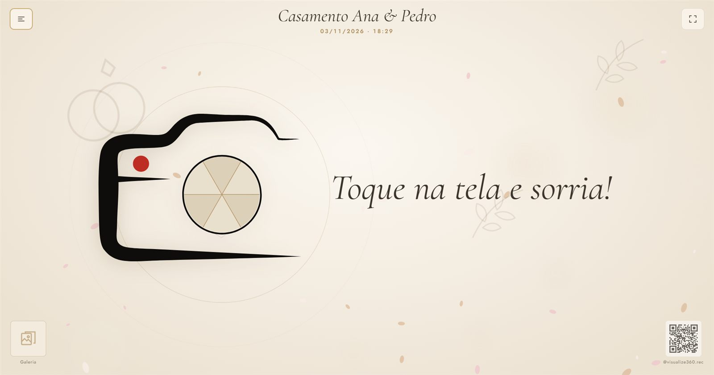
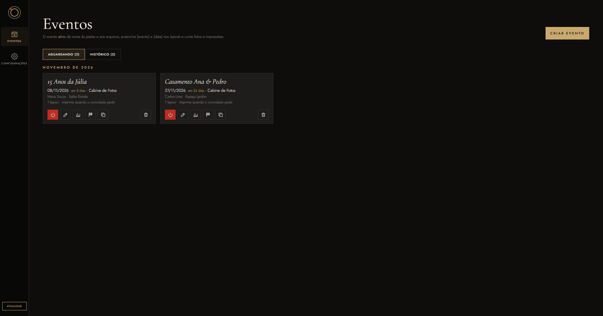
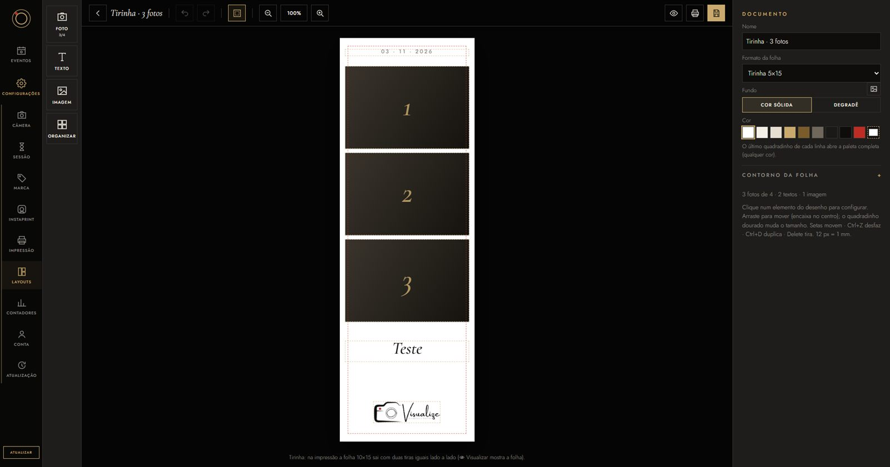
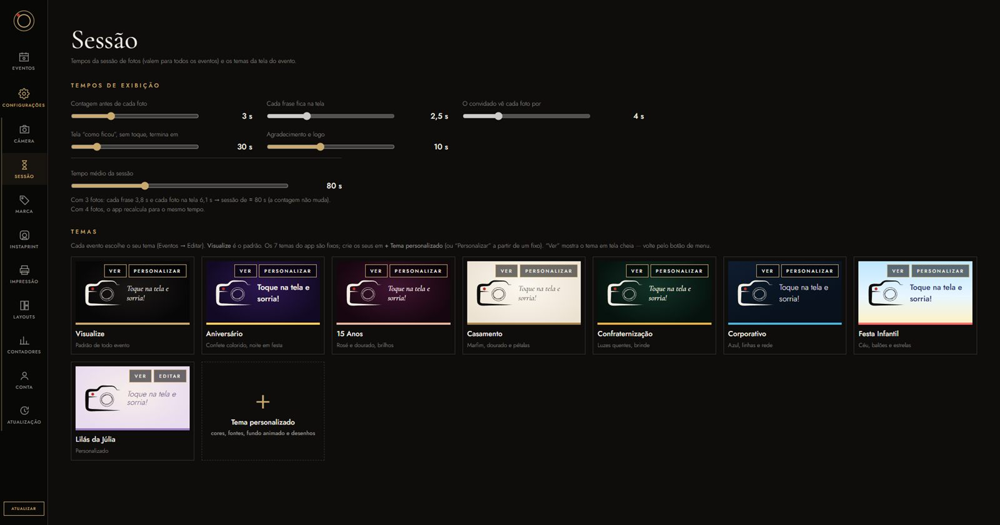
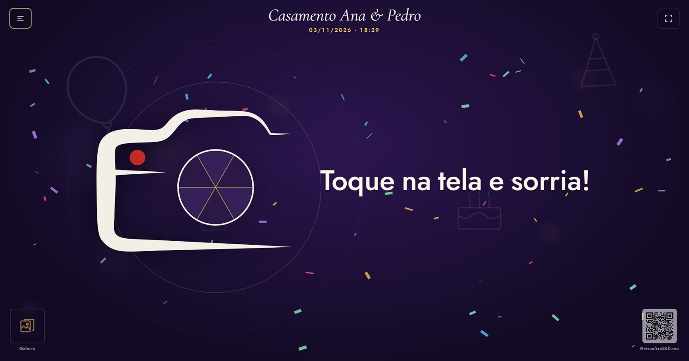
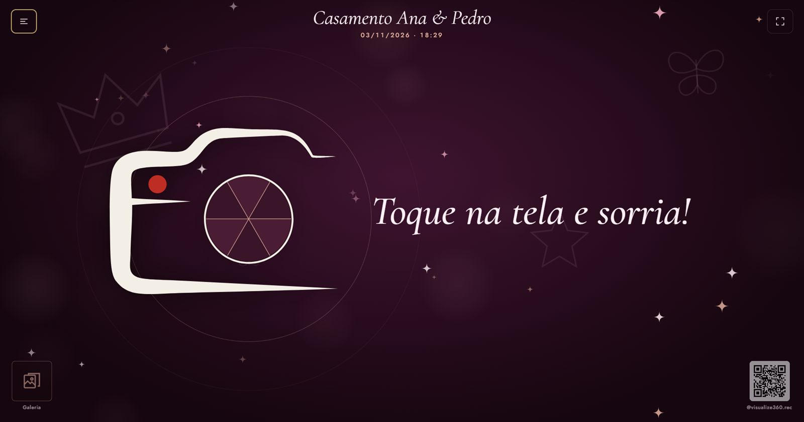
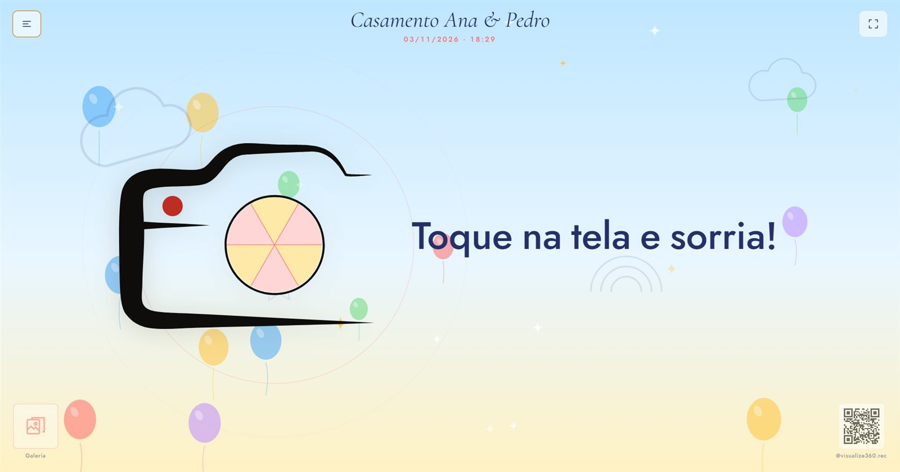

O sistema da sua cabine de fotos
O Atalaia Booth comanda a câmera, guia o convidado, monta a foto no layout do evento e imprime na hora. Tudo configurado uma vez e igual em todos os seus equipamentos.

Para quem trabalha com eventos
O mesmo app roda na cabine, no totem, no espelho mágico e no InstaPrint. Muda o jeito de tirar a foto; a organização é uma só.
Sessão guiada com contagem, várias fotos e a tirinha impressa na hora.
Tela de toque em pé, com o tema da festa e o convidado no comando.
Animações no espelho e a foto 10×15 saindo na impressora.
Postou com a #hashtag do evento, a foto aparece para aprovar e imprimir.
Eventos
Cadastre o cliente, a data, o local, o produto, os layouts e o tema. No dia, é só ativar: as fotos e os contadores já vão para a pasta certa.

Layouts
Comece de um modelo pronto ou importe a sua moldura em PNG: o app encontra as janelas das fotos sozinho. Tirinha 5×15, 10×15 e polaroide.

A experiência do convidado
A tela de espera chama o convidado com o tema da festa. A sessão conduz tudo: frases, contagem, a foto na tela e o agradecimento com a sua marca.

Temas da tela do evento



Tudo o que vem junto
Ao vivo na tela, foco, exposição automática que acompanha a luz do salão e perfis salvos (pouca luz, muita luz).
Escolha a impressora e o papel; a prévia mostra a folha como sai, com cópias por sessão e reimpressão pela galeria.
Logo, cores, fontes, contatos e o QR code da tela de espera com o seu WhatsApp ou site.
Entre com o seu e-mail: eventos, layouts, temas e marca ficam iguais em todos os equipamentos da empresa.
Administrador, gerente e operador. O operador opera o evento sem mexer no que não deve.
O equipamento trabalha com a última cópia e sincroniza quando a conexão volta. O evento não para.
Fotos, sessões e impressões de cada evento, e o total geral que nunca é zerado.
Versão nova? Um toque em Atualizar: o app baixa, confere e reabre. Seus dados ficam como estão.
As fotos do evento numa galeria online, com o QR na hora para o convidado baixar.
Veja funcionando
Como começa
Conte quais equipamentos você tem. Mostramos o sistema funcionando com a sua câmera e impressora.
Um instalador para cada PC. Entre com o e-mail da empresa e convide a sua equipe.
Sua marca, seus layouts e temas. Crie o evento, ative no dia e deixe o convidado brincar.
Perguntas
Câmeras Canon (linha EOS com ligação USB) e as impressoras de foto instaladas no Windows, como as térmicas de 10×15. Também dá para salvar em PDF para testar sem gastar papel.
Não. O equipamento funciona com a última cópia dos seus eventos, layouts e temas. A internet só é usada para sincronizar com os outros PCs, atualizar o app e, no InstaPrint, buscar as fotos da hashtag.
Sim: logo, cores, fontes, telefone, Instagram e o QR code da tela de espera. A tela do evento pode ter um tema personalizado para cada festa.
Não. Entre com a conta da empresa em cada PC: o que você cria num aparece nos outros em segundos.
Cada pessoa entra com o próprio e-mail e um nível: administrador, gerente ou operador. Desativar alguém tira o acesso na hora, sem apagar nada.
Pelo próprio app, em Configurações → Atualização: um toque e ele se atualiza sozinho, sem mexer nos seus dados.
Atalaia Booth
Fale com a gente pelo WhatsApp e veja o sistema funcionando com os seus equipamentos.
Falar no WhatsApp